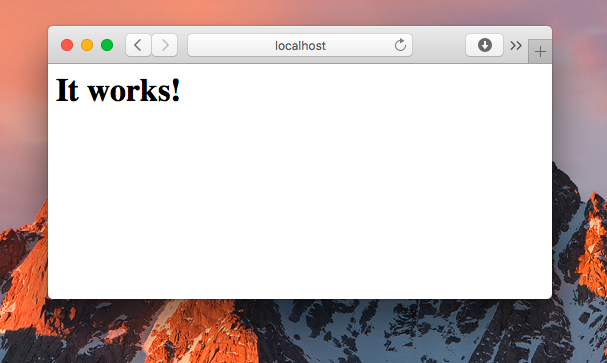
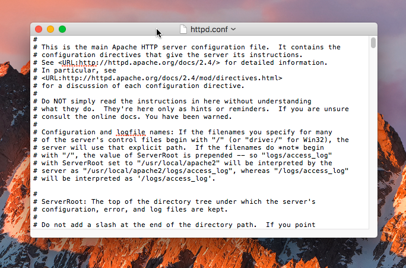
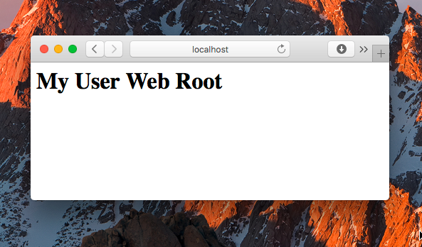
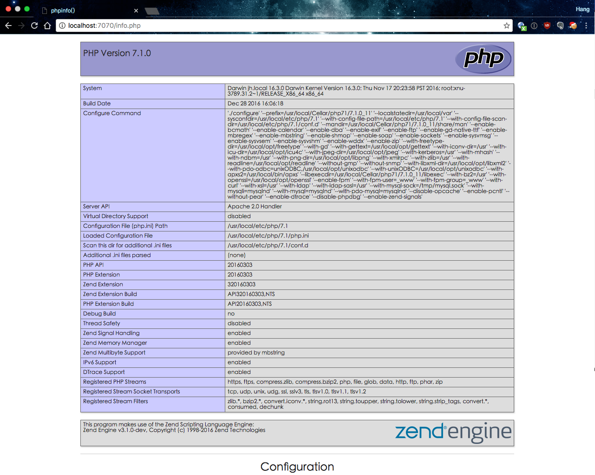
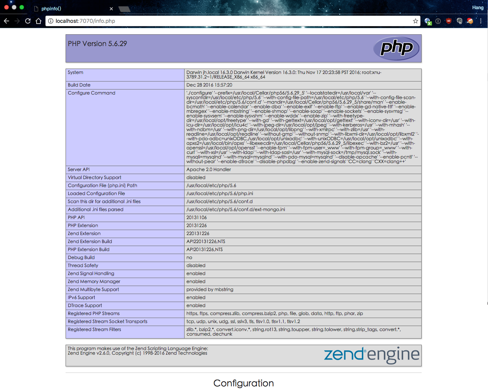

前言：每次搭建开发环境真的是一件很麻烦的事情，但随着时间的推移和系统环境的差异，网上的教程自己曾经安装的经验经常不合时宜，总会出现一些这样或那样的问题。
通过几番搜寻，我终于找到一篇完善的教程，将其翻译成了中文。我也会持续更新这篇文章，不断完善并记录遇到的或新或旧的问题。希望这篇文章可以终结在 macOS 上安装 PHP 开发环境的话题。
本文主要内容翻译自《macOS 10.12 Sierra Apache Setup: Multiple PHP Versions》，并加入了自己的实践。
关于如何在 macOS 10.12 上搭建 Web 开发环境，原作者一共写了三篇文章。这是第一篇。
当前的操作系统是 macOS 10.12，这篇教程讲述的环境搭建和一般 PHP 安装最大的不同是，我们不使用系统自带的 Apache（macOS 自带了 apache、python、ruby 等一些列开发工具），而是使用 Homebrew 的 Apache。当然，系统自带的 Apaceh 也是可以工作的。
在 macOs 上进行 Web 开发，确实是一件很令人愉快的事情。目前也有很多集成开发工具可以方便地搭建开发环境，比如 MAMP PRO，它具有非常漂亮的一个 UI 界面，并且集成了 Apache、PHP 和 MySQL 三个软件，非常适合新手使用。但是有时候，由于其配置模板有限，软件没有及时升级，使用它的时候可能会遇到软件版本不能及时更新、配置不够方便灵活等问题。
于是很多人就开始寻找替代方案。幸运的是，这篇文章就是一个替代方案。并且文章给出了简单直接的安装配置步骤。
1. 安装 Homebrew 🔗
以下所有软件的安装都依赖于 macOS 上的一个包管理工具 Homebrew。使用 brew 命令，我们可以方便地在 mac 上安装各种功能各异的软件，当然，首先的安装 homebrew。安装步骤也非常简单，打开终端然后输入下面的代码：
$ ruby -e "$(curl -fsSL https://raw.githubusercontent.com/Homebrew/install/master/install)"
然后等待终端提示你输入密码，程序就会开始自动安装。如果你没有安装 XCode Command Line Tools，它会自动帮你装上。等待几分钟，待完成后，就可以使用下面的命令查看 Homebrew 是否正确安装：
$ brew --version
Homebrew 1.1.5
Homebrew/homebrew-core (git revision a50a6; last commit 2016-12-28)
同时可能你也需要执行一下下面的命令，来检测配置是否正确：
$ brew doctor
若有配置不当的地方，brew 会给出提示，安装提示修复即可。
1.1 添加第三方仓库 🔗
我们将需要使用一些来自第三方仓库的软件，所以需要添加额外的仓库：
$ brew tap homebrew/php
$ brew tap homebrew/apache
然后更新 brew：
$ brew update
接下来就可以尽情使用 brew 了。
2. Apache 的安装 🔗
最新的 macOS 10.12 预装了 Apache 2.4，但苹果移除了一些必要的脚本，所以 Apache 和 Homebrew 配合使用将会变得困难。当然解决该问题的方法就是，使用 Homebrew 重新安装配置 Apache，并使其运行在标准端口上（80/443）。
如果之前已经安装有 Apache 并且在运行中，首先就需要关闭它，然后移除自动加载脚本。下面的命令没有任何副作用，只管运行就好了：
$ sudo apachectl stop
$ sudo launchctl unload -w /System/Library/LaunchDaemons/org.apache.httpd.plist 2>/dev/null
$ brew install httpd24 --with-privileged-ports --with-http2
接下来需要等待一小会儿，因为这个命令是下载源码并编译安装 Apache。上面命令执行结果如下面这样：
🍺 /usr/local/Cellar/httpd24/2.4.23_2: 212 files, 4.4M, built in 1 minute 45 seconds
这里的路径很重要，因为在接下来的步骤中，我们都需要使用这个路径，在这个例子中，路径是 /usr/local/Cellar/httpd24/2.4.23_2/，如果你的路径不是这个，则在运行下面的命令的时候，将其替换为你的路径就可以了：
$ sudo cp -v /usr/local/Cellar/httpd24/2.4.23_2/homebrew.mxcl.httpd24.plist /Library/LaunchDaemons
$ sudo chown -v root:wheel /Library/LaunchDaemons/homebrew.mxcl.httpd24.plist
$ sudo chmod -v 644 /Library/LaunchDaemons/homebrew.mxcl.httpd24.plist
$ sudo launchctl load /Library/LaunchDaemons/homebrew.mxcl.httpd24.plist
现在我们就通过 Homebrew 安装上了 Apache，并使用管理员权限将其配置为自动启动。这个时候 Apache 应该已经在运行了，所以你打开浏览器访问 localhost 将会看到 “It works！”。

2.1 一些小问题 🔗
如果你的浏览器提示说不能建立连接到服务器，那么首先检查一下 Apache 服务是否已经启动了：
$ ps -aef | grep httpd
如果 Apache 正在运行，你将会看到一些 httpd 进程。
重启 Apache：
$ sudo apachectl -k restart
我们也可以监控 Apache 的错误日志，查看是否有错误信息：
$ tail -f /usr/local/var/log/apache2/error_log
如果上面这些步骤都没有解决问题，那么确定你的 Apache 是否监听了 80 端口，即 /usr/local/etc/apache2/2.4/httpd.conf 配置文件是否有 Listen: 80，或者 Listen: 后面是其他端口。
Apache 是通过 apachectl 来进行控制的，它的基本使用方法如下：
$ sudo apachectl start
$ sudo apachectl stop
$ sudo apachectl -k restart
-k 参数将强制重启 Apache，不管 Apache 是否准备好。
最终我将我的 Apache 的端口修改为了 7070，主要是因为 80 端口是 HTTP 服务的默认端口，8080 端口是 Tomcat 的默认端口，为了避免与其他软件如 nginx 等发生潜在端口冲突问题，所以改为了 7070。
2.2 Apache 的配置 🔗
现在我们已经有了一个 Web 服务器，接下来我们需要对其进行一些配置，以便于更方便我们本地的开发。
首先修改 Apache 的 document root，这是 Web 服务的根目录，Apache 会从这个目录中寻找资源文件。默认的 document root 是 /Library/WebServer/Documents。作为一个开发环境，我们可能更希望网站的根目录（即 Web 服务的根目录）在我们自己的用户主目录下。所以接下来修改配置。
我们可以在终端通过 open -e 命令使用 Mac 默认的文本编辑器打开一个文件：
$ open -e /usr/local/etc/apache2/2.4/httpd.conf

搜索 DocumentRoot，然后你会看到下面这行：
DocumentRoot "/usr/local/var/www/htdocs"
将这行配置改为自己的用户主目录中的目录，把 your_user 改为你的用户名：
DocumentRoot "/Users/your_user/sites"
紧接着还要将上面这行代码下面的 <Directory> 也改为你的新的 document root：
<Directory "/Users/your_user/sites">
在 <Directory> 代码块里面，我们还需要将 AllowOverride 改为下面的样子：
# AllowOverride controls what directives may be placed in .htaccess files.
# It can be "All", "None", or any combination of the keywords:
# AllowOverride FileInfo AuthConfig Limit
#
AllowOverride All
接下来通过取消注释使用 mod_rewrite 模块：
LoadModule rewrite_module libexec/mod_rewrite.so
2.4 用户和用户组 🔗
现在 Apache 已经指向了我们的用户主目录下的 sites 目录，不过依旧还存在一个问题。Apche 运行的时候，其用户及用户组都是 daemon，当程序访问我们的用户主目录的时候，就会遇到权限问题。解决这个问题的方法就是，在 httpd.conf 将用户和用户组分别改为你的用户名 your_user 和 staff：
User your_user
Group staff
2.5 sites 目录 🔗
接下来就需要在用户主目录下创建一个 sites 目录了，然后添加一个简单的 index.html 文件，并写入 <h1>My User Web Root</h1> 代码：
$ mkdir ~/Sites
$ echo "<h1>My User Web Root</h1>" > ~/sites/index.html
注意，sites 目录的绝对路径需要和 httpd.conf 中的 DocumentRoot 保持一致。
然后重启 Apache 使配置生效：
$ sudo apachectl -k restart
再访问 http://localhost 就会显示 index.html 里面的内容。如果你的配置也生效了，我们就可以继续下一步了。

3. PHP 的安装 🔗
我们接下来安装 PHP 5.5、PHP 5.6、PHP 7.0 和 PHP 7.1，并使用一个简单的脚本来切换不同的版本。
你可以使用 brew options php55 来查看所有可以安装的选项设置，比如在这个例子中，我们使用 --with-httpd24 参数来编译安装 PHP 以及使 Apache 支持 PHP 所需要的一些模块。
$ brew install php55 --with-httpd24
$ brew unlink php55
$ brew install php56 --with-httpd24
$ brew unlink php56
$ brew install php70 --with-httpd24
$ brew unlink php70
$ brew install php71 --with-httpd24
上面的命令会从源码下载 PHP，并进行编译安装。这可能需要一点时间。
如果之前已经安装过 PHP，可能需要使用 reinstall 来代替 install 进行安装。
3.0.1 ISSUE configure: error: Cannot find libz 🔗
我在安装的时候遇到了一个错误：
==> ./configure --prefix=/usr/local/Cellar/php56/5.6.11_2 --localstatedir=/usr/local/var --sysconfdir=/usr/local/etc/php/5.6 --with-config-file-path=/usr/local/etc/php/5.6 --with
checking whether to enable the SQLite3 extension... yes
checking bundled sqlite3 library... yes
checking for ZLIB support... yes
checking if the location of ZLIB install directory is defined... no
configure: error: Cannot find libz
最终在 Github 上找到了该 ISSUE Cannot find libz when install php56 #1946 。
其原因可能是 Xcode 的 Command Line Tool 没有正确安装。解决问题的方法是运行下面的命令来重新安装：
$ xcode-select --install
可能你也需要根据自己的需要修改一些 PHP 的配置，常见的比如修改内存配置或 date.timezone 配置。各个版本的配置文件即 php.ini 在下面的目录：
/usr/local/etc/php/5.5/php.ini
/usr/local/etc/php/5.6/php.ini
/usr/local/etc/php/7.0/php.ini
/usr/local/etc/php/7.1/php.ini
3.1. Apache 和 PHP 的配置 - 第一部分 🔗
我们已经成功安装了多个版本的 PHP，但我们还需要告诉 Apache 怎么使用它们。再次打开 /usr/local/etc/apache2/2.4/httpd.conf，并搜索 LoadModule php5_module 所在行。
可以发现，每个版本的 PHP 都有一个 LoadModule 入口，每个 LoadModule 都指向一个特定版本的 PHP。这里默认的路径如 /usr/local/Cellar/php71/7.1.0_11/libexec/apache2/libphp7.so 是 brew 应用程序的安装路径，我们可以使用一个更通用的路径来替换它们（具体的路径可能有所不同）：
LoadModule php5_module /usr/local/Cellar/php55/5.5.38_11/libexec/apache2/libphp5.so
LoadModule php5_module /usr/local/Cellar/php56/5.6.29_5/libexec/apache2/libphp5.so
LoadModule php7_module /usr/local/Cellar/php70/7.0.14_7/libexec/apache2/libphp7.so
LoadModule php7_module /usr/local/Cellar/php71/7.1.0_11/libexec/apache2/libphp7.so
将上面的路径修改为：
LoadModule php5_module /usr/local/opt/php55/libexec/apache2/libphp5.so
LoadModule php5_module /usr/local/opt/php56/libexec/apache2/libphp5.so
LoadModule php7_module /usr/local/opt/php70/libexec/apache2/libphp7.so
LoadModule php7_module /usr/local/opt/php71/libexec/apache2/libphp7.so
之所以可以这么修改，是因为 /usr/local/opt/php71 其实是由 brew 创建的 /usr/local/Cellar/php71 的一个软连接。
这么修改的好处是，升级 PHP 的小版本号的时候，比如由 7.1.0_11 时，我们就不需要再修改 LoadModule 对应的值了。
我们每次开发或运行依旧只需要一般也只能使用某一个版本的 PHP。以我们要使用 7.1 这个版本开发应用为例，将其他版本的 LoadModule 都注释掉，只保留对应版本的 LoadModule：
#LoadModule php5_module /usr/local/opt/php55/libexec/apache2/libphp5.so
#LoadModule php5_module /usr/local/opt/php56/libexec/apache2/libphp5.so
#LoadModule php7_module /usr/local/opt/php70/libexec/apache2/libphp7.so
LoadModule php7_module /usr/local/opt/php71/libexec/apache2/libphp7.so
这样的配置就会告诉 Apache 使用 PHP 7.1 来处理 PHP 请求。（稍后我们将添加切换 PHP 版本的脚本。）
接下来还需要配置 PHP 的主目录索引文件（Directory Indexes），找到下面的代码块：
<IfModule dir_module>
DirectoryIndex index.html
</IfModule>
将其替换为下面的代码：
<IfModule dir_module>
DirectoryIndex index.php index.html
</IfModule>
<FilesMatch \.php$>
SetHandler application/x-httpd-php
</FilesMatch>
保存后重启 Apache，PHP 的安装就完成了：
$ sudo apachectl -k restart
3.2. 验证 PHP 安装结果 🔗
验证 PHP 是否正确安装的最好方法是使用 phpinfo() 这个函数，这个函数会输出 PHP 的版本等信息。当然，最好不要在你的生产环境中使用它。但在开发环境中，使用它对我们了解系统中 PHP 安装信息非常有帮助。
在网站主目录即你的 sites/ 目录下创建一个 info.php 的文件，然后输入下面的代码：
<?php
phpinfo();
?>
打开浏览器，访问 http://localhost:7070/info.php，你讲看到下面的完美的 PHP 信息页面：

如果能够看到类似的页面，就说明 Apache 和 PHP 已经成功运行了。你可以通过注释 LoadModule ... php56 ... 来测试其他版本的 PHP。修改配置后，重启 Apache 并刷新页面就能看到类似的页面了。
3.3 PHP 版本切换脚本 🔗
在开发中，如果每次都通过修改 /usr/local/etc/apache2/2.4/httpd.conf 文件去切换 PHP 版本，显然太麻烦了。有没有更容易的方法呢？幸运的是，一些勤劳的开发者已经写好了这样的一个脚本 PHP switcher script。
接下来我们将添加 sphp 到 brew 的 /usr/local/bin 里面。原文给的方法是使用下面的命令：
$ curl -L https://gist.github.com/w00fz/142b6b19750ea6979137b963df959d11/raw > /usr/local/bin/sphp
$ chmod +x /usr/local/bin/sphp
其中第一行命令的作用，就是将 Gist 上的这个切换 PHP 版本的脚本下载并写入到 /usr/local/bin/sphp 这个文件里面。第二行命令的作用是赋予 /usr/local/bin/sphp 可执行权限。
但由于国内并不能访问 Gist，所以第一行命令并不能执行成功。所以我在这里提供了整个脚本代码：
#!/bin/bash
# Check if command was ran as root.
if [[ $(id -u) -eq 0 ]]; then
echo "The command \"sphp\" should not be executed as root or via sudo directly."
echo "When a service requires root access, you will be prompted for a password as needed."
exit 1
fi
# Usage
if [ $# -ne 1 ]; then
echo "Usage: sphp [phpversion]"
echo "Versions installed:"
brew list | grep '^php[0-9]\{2,\}$' | grep -o -E '[0-9]+' | while read -r line ; do
echo " - phpversion: $line"
done
exit 1
fi
currentversion="`php -r \"error_reporting(0); echo str_replace('.', '', substr(phpversion(), 0, 3));\"`"
newversion="$1"
majorOld=${currentversion:0:1}
majorNew=${newversion:0:1}
minorNew=${newversion:1:1}
brew list php$newversion 2> /dev/null > /dev/null
if [ $? -eq 0 ]; then
echo "PHP version $newversion found"
# Check if new version is already the current version.
# if [ "${newversion}" == "${currentversion}" ]; then
# echo -n "PHP version ${newversion} is already being used. Continue by reloading? (y/n) "
# while true; do
# read -n 1 yn
# case $yn in
# [Yy]* ) echo && break;;
# [Nn]* ) echo && exit 1;;
# esac
# done
# fi
echo "Unlinking old binaries..."
brew unlink php$currentversion 2> /dev/null > /dev/null
echo "Linking new binaries..."
brew link php$newversion
echo "Linking new modphp addon..."
sudo ln -sf `brew list php$newversion | grep libphp` /usr/local/lib/libphp${majorNew}.so
echo /usr/local/lib/libphp${majorNew}.so
echo "Fixing LoadModule..."
apacheConf=`httpd -V | grep -i server_config_file | cut -d '"' -f 2`
sudo sed -i -e "/LoadModule php${majorOld}_module/s/^#*/#/" $apacheConf
if grep "LoadModule php${majorNew}_module .*php${newversion}" $apacheConf > /dev/null
then
sudo sed -i -e "/LoadModule php${majorNew}_module .*php${newversion}/s/^#//" $apacheConf
else
sudo sed -i -e "/LoadModule php${majorNew}_module/s/^#//" $apacheConf
fi
echo "Updating version file..."
pgrep -f /usr/sbin/httpd 2> /dev/null > /dev/null
if [ $? -eq 0 ]; then
echo "Restarting system Apache..."
sudo pkill -9 -f /usr/sbin/httpd
sudo /usr/sbin/apachectl -k restart > /dev/null 2>&1
fi
pgrep -f /usr/local/"Cellar|opt"/*/httpd 2> /dev/null > /dev/null
if [ $? -eq 0 ]; then
echo "Restarting homebrew Apache..."
sudo pkill -9 -f /usr/local/"Cellar|opt"/*/httpd
sudo /usr/local/bin/apachectl -k restart > /dev/null 2>&1
fi
# pgrep -x httpd 2> /dev/null > /dev/null
# if [ $? -eq 0 ]; then
# echo "Restarting non-root homebrew Apache..."
# httpd -k restart > /dev/null 2>&1
# fi
echo "Done."
# Show PHP CLI version for verification.
echo && php -v
else
echo "PHP version $majorNew.$minorNew was not found."
echo "Try \`brew install php${newversion}\` first."
exit 1
fi
首先在 /usr/local/bin/ 目录下新建 sphp 文件，然后通过 open 命令使用默认的编辑器打开它：
$ touch /usr/local/bin/sphp
$ open -e /usr/local/bin/sphp
将上面的代码复制进去并保存，然后赋予可执行权限：
$ chmod +x /usr/local/bin/sphp
3.4. 检测 PATH 路径 🔗
Homebrew 在安装程序的时候一般会把程序的可执行文件加入到 /usr/local/bin 和 /usr/local/sbin 这两个目录里面。通过下面的命令可以快速测试可执行文件路径是否正确：
$ echo $PATH
/usr/local/bin:/usr/bin:/bin:/usr/sbin:/sbin
如果没有看到类似的输出，你可能需要手动添加这些路径。添加下面的代码到 shell 的配置文件中（不同的 shell 可能需要将路径添加到不同的配置文件中，如 ~/.profile ~/.bash_profile ~/.zshrc）。如果使用的是 macOS 默认的 shell，则添加到 ~/.profile （若没有这个文件，则创建它）；如果使用的是 zsh，则添加到 ~/.zshrc：
export PATH=/usr/local/bin:/usr/local/sbin:$PATH
在添加路径到配置文件的时候，最好关闭其他不相关的终端，因为某些开着的终端可能会对路径造成一些奇怪的问题。添加完成后，配置会在下次打开终端的时候生效。或者使用下面的命令，重新载入配置文件使其立即生效：
# 若使用的是默认终端
$ source ~/.profile
# 或如果使用的是 zsh
$ source ~/.zshrc
3.5. Apache 和 PHP 的配置 - 第二部分 🔗
尽管之前我们已经配置好了 Apache 和 PHP，现在我们还需要修改配置文件，来使用 PHP switcher script 切换 PHP 的版本。继续打开 /usr/local/etc/apache2/2.4/httpd.conf 然后找到 LoadModule php 所在的行：
然后注释掉正在使用的 LoadModule：
#LoadModule php5_module /usr/local/opt/php55/libexec/apache2/libphp5.so
#LoadModule php5_module /usr/local/opt/php56/libexec/apache2/libphp5.so
#LoadModule php7_module /usr/local/opt/php70/libexec/apache2/libphp7.so
#LoadModule php7_module /usr/local/opt/php71/libexec/apache2/libphp7.so
并在下面添加：
#Brew PHP LoadModule for `sphp` switcher
#LoadModule php5_module /usr/local/lib/libphp5.so
LoadModule php7_module /usr/local/lib/libphp7.so
如果你安装了 PHP 5.5 或 5.6 等，注释掉的 php5_module 同样也非常重要。PHP switcher script 会自动注释或取消注释 PHP module。
3.6 PHP 切换测试 🔗
完成上面的步骤之后，就可以使用 sphp 命令来切换 PHP 版本了。sphp 的参数是由两个数字组合成的两位数：
$ sphp 55
PHP version 55 found
Unlinking old binaries...
Linking new binaries...
Linking /usr/local/Cellar/php55/5.5.38_11... 17 symlinks created
Linking new modphp addon...
/usr/local/lib/libphp5.so
Fixing LoadModule...
Updating version file...
Restarting homebrew Apache...
Done.
PHP 5.5.38 (cli) (built: Dec 28 2016 15:48:28)
Copyright (c) 1997-2015 The PHP Group
Zend Engine v2.5.0, Copyright (c) 1998-2015 Zend Technologies
然后访问 http://localhost:7070/info.php，可以看到 PHP 版本已经正确切换：

3.6.1 ISSUE Unable to load dynamic library ‘/usr/local/opt/php56-mongo/mongo.so’ 🔗
我在切换版本的时候也遇到了问题：
$ sphp 71
...
Warning: PHP Startup: Unable to load dynamic library '/usr/local/opt/php56-mongo/mongo.so' - dlopen(/usr/local/opt/php56-mongo/mongo.so, 9): image not found in Unknown on line 0
PHP 5.6.29 (cli) (built: Dec 28 2016 15:58:30)
Copyright (c) 1997-2016 The PHP Group
Zend Engine v2.6.0, Copyright (c) 1998-2016 Zend Technologies
根据错误提示，大概是因为 php56-mongo 这个扩展没有，于是我使用 brew 安装了 php56-mongo 问题就解决了：
$ brew install php56-mongo
3.7 更新 PHP 和其他通过 Brew 安装的程序 🔗
使用 brew 更新 PHP 和其他通过 brew 安装的程序非常简单，第一步是更新 brew 本身：
$ brew update
升级后将会列出一系列可测回归内心的程序，然后使用下面的命令更新：
$ brew upgrade
3.8 使用具体的/最新的 PHP 版本 🔗
当我们使用 PHP 的时候，每次我们只使用了其中一个版本，并且只有当前使用的版本会更新到最新版本。可以使用下面的命令查看当前 PHP 版本：
$ php -v
可以使用下面的命令查看具体的可用 PHP 版本：
$ brew info php55
homebrew/php/php55: stable 5.5.38 (bottled), HEAD
PHP Version 5.5
https://php.net
Conflicts with: php53, php54, php56, php70, php71
/usr/local/Cellar/php55/5.5.38_11 (329 files, 47.7M)
Built from source on 2016-12-28 at 15:49:20 with: --with-httpd24
比如上面的 PHP 5.5 版本的只有一个可用版本 5.5.38。
然后可以使用 brew 来切换到一个具体的版本：
$ brew switch php55 5.5.38
到此，这篇文章就结束了。你已经完成掌握了 Apache 2.4 和各个版本 PHP 的安装，并且能够在 5.5 5.6 7.0 7.1 中快速切换 PHP 版本。原作者还写了两外两篇文章，分别是 macOS 10.12 Sierra Apache Setup: MySQL, APC & More 和 macOS 10.12 Sierra Apache Setup: SSL，近期内我也会将它们翻译成中文，并加入自己的实践总结。
4. 更新 🔗
4.1 homebrew/dupes was deprecated 🔗
在 1.1 需要添加第三方库 brew tap homebrew/dupes 的时候，由于有些软件 macOS 已经有了，有一些移动到了 homebrew-core 所以不再需要添加了。详见 Homebrew/homebrew-dupes。
These formulae were those that duplicated software provided by macOS. All formulae were migrated to Homebrew/homebrew-core or deleted.
如果执行这个命令，就会有如下警告：
$ brew tap homebrew/dupes
Warning: homebrew/dupes was deprecated. This tap is now empty as all its formulae were migrated.
4.2 Warning: homebrew/versions was deprecated. 🔗
同理，还有 homebrew/versions 也不需要添加了。
$ brew tap homebrew/versions
Updating Homebrew...
==> Auto-updated Homebrew!
Updated 1 tap (caskroom/cask).
No changes to formulae.
Warning: homebrew/versions was deprecated. This tap is now empty as all its formulae were migrated.
4.3 –with-http2 was deprecated; using –with-nghttp2 instead 🔗
Warning: homebrew/apache/httpd24: –with-http2 was deprecated; using –with-nghttp2 instead! Warning: homebrew/apache/httpd24: this formula has no –with-nghttp2 option so it will be ignored!
4.4 Apache 和 PHP 的配置 - 第二部分 🔗
在 3.5. Apache 和 PHP 的配置 - 第二部分 部分，不修改配置文件也可以。
Github Issue: https://github.com/nodejh/nodejh.github.io/issues/25